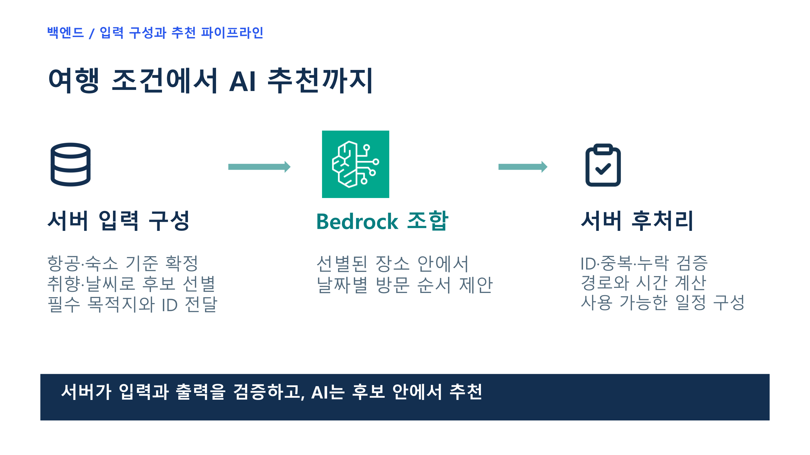
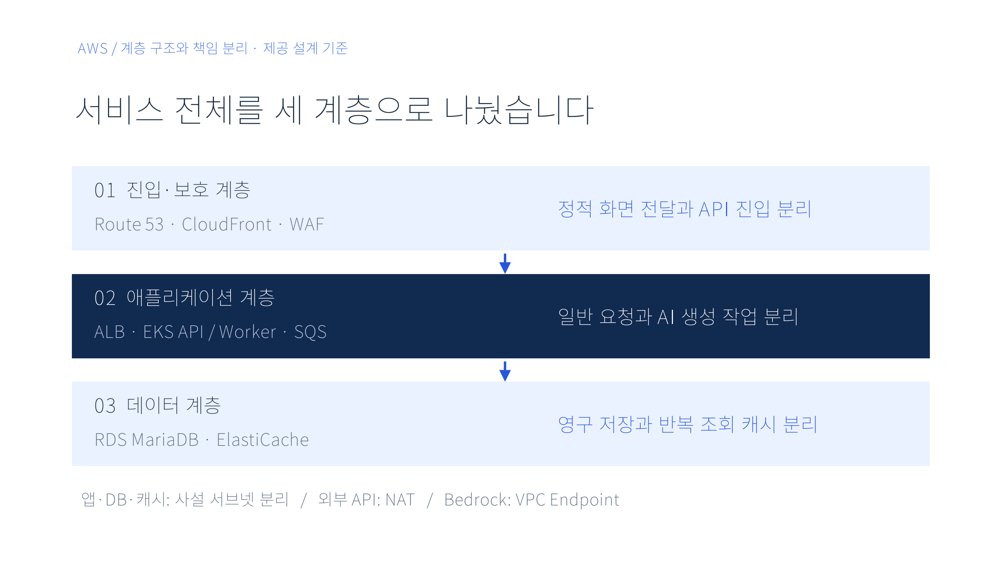
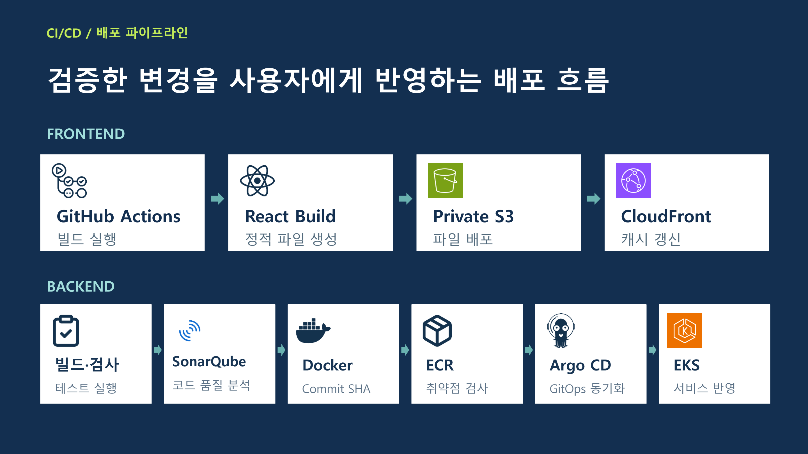
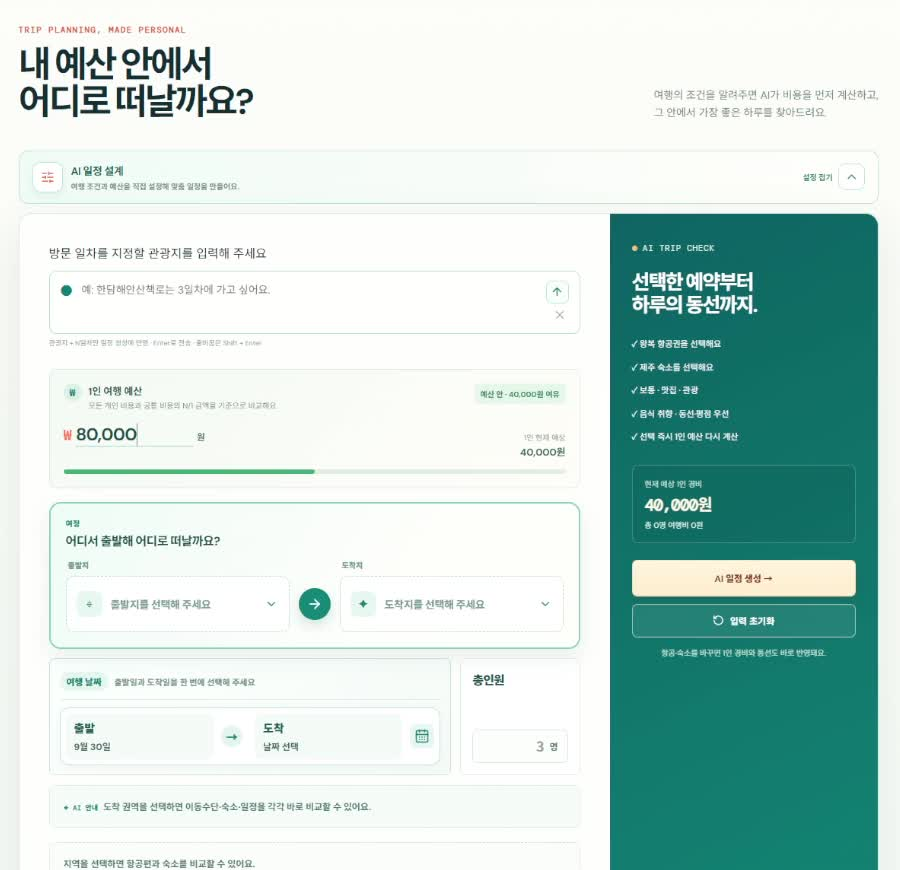
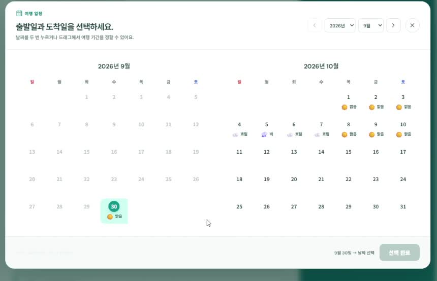
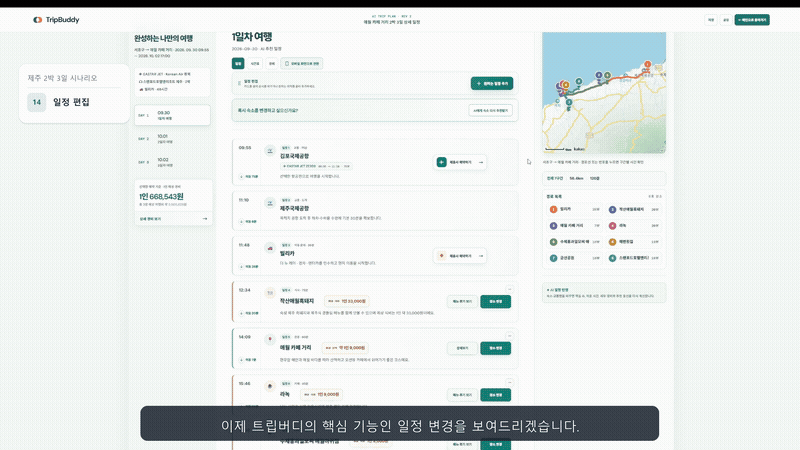

새로운 여행 서비스
예산에 맞춘 일정 생성과
여행 중 수정 흐름을 하나로 구현
TripBuddy
예산에 맞춘 일정 생성부터 여행 중 수정까지.
기획·개발·배포를 연결해 TripBuddy를 만들었습니다.
서비스 기획 · React 개발 · API 연동 · 프로젝트 진행
Cloud DX Academy 팀 프로젝트
예산에 맞춘 일정 생성과
여행 중 수정 흐름을 하나로 구현
프론트엔드와 PM 역할로
팀의 작업을 하나의 서비스로 연결
대기업 현직 CTO들의 평가를 거쳐
팀 프로젝트 장려상 수상
여행은 좋았지만,
매번 일정을 짜는 일은 번거로웠습니다.
여행을 준비할 때마다 갈 곳과 식당을 찾고, 지도에서 이동시간을 확인한 뒤 하루 일정으로 엮었습니다. 숙소와 교통편까지 맞추고 나면, 여행 하나를 위해 여러 서비스와 정보를 오가야 했습니다.
이 불편이 저만의 경험인지 확인하고 싶었습니다. 공개 조사와 여러 여행 서비스, 매체와 이용 후기를 검토하며 사람들이 어느 과정에서 어려움을 겪는지 살폈습니다.
관광지·식당·숙소·교통편 정보를 여러 곳에서 모아야 했습니다.
영업시간과 위치, 이동시간을 대조해 방문 순서를 정해야 했습니다.
식당 휴무나 날씨 변화가 생기면 대체 장소와 남은 동선을 다시 찾아야 했습니다.
여행 상품 비교와 AI 일정 추천은 이미 제공되고 있었습니다. 저는 여러 자료를 살펴보며, 만들어진 일정을 실제 여행 조건에 맞게 수정하는 과정에 해결할 여지가 있다고 봤습니다.
등록되지 않은 장소를 넣거나 날짜별 일정을 편집할 때 불편을 겪은 이용 사례를 확인했습니다.
AI 프롬프트로 시각을 지정할 수 있어도, 일정 화면에서 바로 고치는 과정에는 제약이 있다는 사례가 있었습니다.
인용 후기 원문폭넓게 검토한 자료 중 발표에 사용한 사례입니다. 개별 후기를 모든 사용자나 현재 서비스 전체의 문제로 일반화하지 않았습니다.
일정을 만들어주는 데서 그치지 않고,
여행 중 바뀐 계획도 직접 조정할 수 있게 만들자.
이 과제를 팀과 함께 TripBuddy로 구체화했습니다. 예산과 여행 조건을 입력하면 일정을 만들고, 결과 화면에서 장소와 방문 순서를 직접 바꿀 수 있도록 구현했습니다.
예산·날짜·교통·숙소·취향
조건을 반영한 날짜별 계획
방문 순서 변경·장소 교체
모바일에서 일정·경로 확인
① 날짜와 예상 경비현재 여행 조건과 비용을 확인합니다.
② 일정 편집장소를 교체하고 방문 순서를 바꿉니다.
③ 이동 경로변경된 일정의 동선을 함께 살핍니다.
사용자가 조건을 입력하면 서버가 실제 장소 후보를 선별하고, AI 생성 결과를 검증해 화면에 전달합니다. 저는 프론트엔드와 PM 역할로 이 흐름을 각 담당자와 맞췄습니다.
Java·Spring Boot 서버에서 공공데이터와 항공·날씨·경로 API를 연결해 여행 정보를 확보했습니다. 서버가 조건에 맞는 장소 후보를 좁히고, Bedrock은 그 안에서 방문 순서를 제안하도록 구성했습니다.
결과의 장소 ID·중복·누락을 검사하고, 생성 실패 시 서버 규칙으로 대체 일정을 구성했습니다. 일정 편집 뒤에는 바뀐 날짜의 경로와 이동비를 다시 계산했습니다.
제가 연결한 부분
백엔드 담당자와 요청·응답 형식과 생성 상태를 맞춰, 입력부터 결과·편집까지 화면에 연결했습니다.

정적 화면은 S3·CloudFront로 제공하고, API와 Worker는 EKS의 별도 실행 단위로 나눴습니다. 오래 걸리는 생성 요청은 SQS를 거쳐 Worker가 처리하도록 했습니다.
최종 일정은 RDS MariaDB에 저장하고, 반복 조회는 ElastiCache Redis와 TTL로 재사용했습니다. IAM 역할과 Secrets Manager로 접근 권한·민감정보를 분리했습니다.
제가 연결한 부분
클라우드 담당자와 배포 환경의 API 연결을 확인하며, 사용자 요청부터 클라우드 처리 결과까지 이어지는 구조를 경험했습니다.

프론트엔드는 GitHub Actions 빌드 후 S3에 배포하고 CloudFront 캐시를 갱신했습니다. 백엔드는 빌드·테스트와 Docker 이미지 검사를 거쳐 ECR·Argo CD·EKS로 반영했습니다.
부하 테스트에서는 API Pod의 CPU 부담을 관찰하고, HPA로 Pod가 늘어난 뒤 부하 감소 시 다시 줄어드는 동작을 확인했습니다.
제가 연결한 부분
화면 변경과 백엔드·배포 작업의 진행 상황을 맞추고, 배포된 서비스의 시연과 프로젝트 마무리를 준비했습니다.

위 내용은 팀 전체의 핵심 구현입니다. 프론트엔드는 제가 담당했고, 백엔드·AWS·DevOps는 각 담당자와 협업했습니다. 부하 테스트 결과를 실사용자 성과나 실제 AWS 비용 절감액으로 바꾸어 표현하지 않았습니다.
백엔드·DevOps·AWS는 각 담당자와 협업한 범위입니다.
사용자 행동을 요청으로 연결
요청·응답·생성 상태 조율
화면 변경과 실행 환경 연결
배포된 환경에서 연동 확인
프론트엔드에서 보낸 요청이 백엔드에서 처리되고, 배포된 클라우드 환경을 거쳐 다시 화면에 표시되는 전체 흐름을 경험했습니다.
교통편과 숙소를 각각 고른 뒤 비용을 맞추는 대신, 여행의 예산을 첫 단계에서 정하도록 설계했습니다.
예산 → 출발지·목적지 → 날짜 → 교통·숙소 → 취향 순서로 필요한 조건을 확보했습니다.
조건 입력 시연
처음에는 날짜와 시간을 함께 받았지만, 항공·KTX는 티켓 시각이 일정 기준이 됩니다. 공통 날짜 화면에서 시간 입력을 빼고 자차를 선택한 경우에만 설정하도록 바꿨습니다.
모든 사람에게 같은 정보를 묻던 흐름을 교통수단에 맞춘 입력으로 수정했습니다.

요청을 보낸 뒤 결과가 올 때까지의 흐름도 화면의 일부로 다뤘습니다. API의 처리 상태를 확인해 대기와 결과를 구분하고, 공통 인증·세션·오류 처리를 재사용하도록 연결했습니다.
사용자의 입력부터 API 요청, 생성 상태 확인, 결과 화면까지 하나의 흐름으로 구현했습니다.

PC에서 세운 계획을 여행지에서는 모바일로 확인합니다.
순서가 바뀌거나 다른 식당에 가고 싶을 때, 그 자리에서 일정을 수정할 수 있습니다.
다운로드: 전체 시연 MP4
기획한 내용을 실제 서비스로 구현해 발표했습니다. 대기업 현직 CTO들의 평가를 거쳐, 팀 프로젝트 장려상을 수상했습니다.
저는 프론트엔드 개발과 PM 역할을 맡으며, 아이디어가 화면과 API, 배포 환경을 거쳐 하나의 서비스로 완성되는 과정을 끝까지 경험했습니다.
문제를 찾고, 해결책을 기획하고,
팀과 함께 실제로 동작하는 서비스까지 완성했습니다.
본인 기여는 프론트엔드·기획·프로젝트 진행이며, 서비스 전체는 각 분야 담당자와 함께 만든 팀 결과물입니다.
제주 2박 3일 계획을 만들고 수정하는 실제 시연입니다. 원하는 장면부터 볼 수 있습니다.
1920 × 1080 · 약 6분 21초 · 자막·음성 포함
다운로드: 시연 영상 MP4
공개 조사·경쟁 서비스 검토·구현·AWS·배포 과정을 담은 46장입니다.
버튼이나 키보드 방향키로 한 장씩 넘겨볼 수 있습니다.
2880 × 1620 고해상도 미리보기입니다. 크게 보기로 확대할 수 있으며, 시연 영상은 위 플레이어에서 확인할 수 있습니다.
다운로드: 영상 포함 PPT 원본
예산·일정 생성부터 편집까지의 시연은 제주 2박 3일 사례입니다. 항공·숙소 금액은 예상 견적이며 렌터카에는 시연 데이터를 사용했습니다. 결제·예약 확정 기능이나 모든 국내 지역의 품질 검증을 의미하지 않습니다. 실습용 AWS 환경 종료 이후의 구현 결과는 영상과 코드로 확인할 수 있습니다.
개발은 별도 팀 저장소에서 진행했습니다. 공개 저장소의 커밋 수는 전체 개발 이력이나 개인별 기여도를 나타내지 않습니다. 구현 과정에서 AI 도구를 활용했으며, 요구사항 구체화와 결과 확인·반복 수정에 집중했습니다.